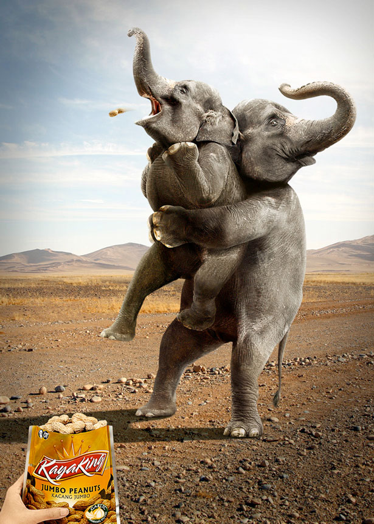
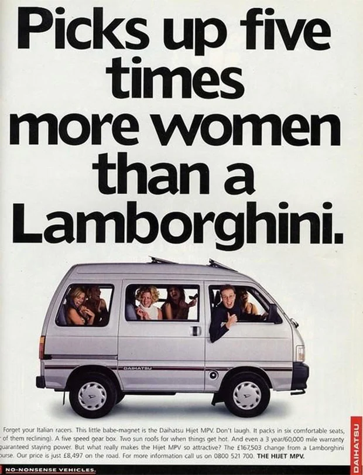
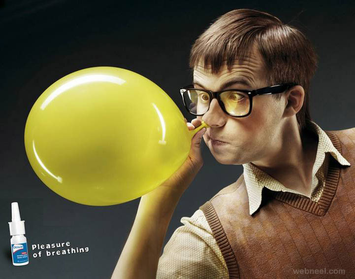

New ‘Odyssey’ Adaptation Criticized For Dropping Original’s Group Dance Scene Ending
Published: November 21, 2024
LOS ANGELES—Drawing widespread condemnation from classics scholars around world, the new Odyssey adaptation The Return was criticized this week for dropping the original work’s group dance scene ending.
The Onion’s Exclusive Interview With Ariana Grande And Cynthia Erivo
Published: November 21, 2024
Ariana Grande and Cynthia Erivo star in Wicked, an adaptation of the Broadway musical with a massive marketing campaign. The Onion sat down with the actresses to discuss their love of theater, craft, and on-set friendships.
Advertisment

Advertisment

Advertisment

Advertisment

.